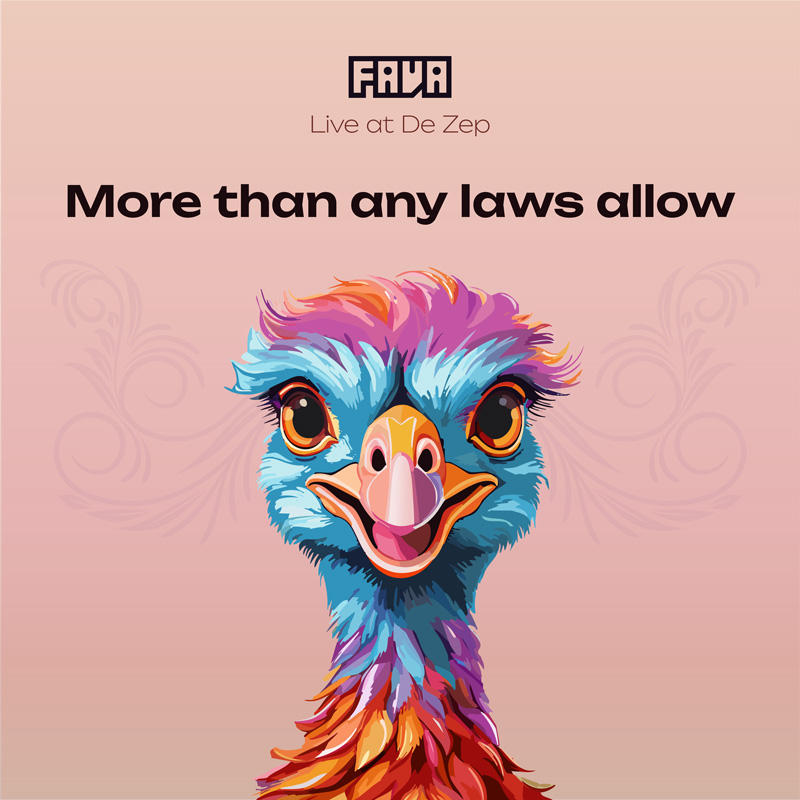

More than any laws allow Live at De Zep (autumn 2024). Audio  Tracklist Céline Dion It's All Coming Back to Me Now Meat Loaf feat. Lorraine Crosby I'd Do Anything for Love (But I Won't Do That) Roxette Sleeping in My Car Plastikman Spastik Milk Inc. Losing Love (DJ Wout Remix) Pat Krimson Paranoid In Moscow (Titanic Mix) Marco Bailey Sniff Daft Punk Rock'n Roll Lula Man = Drug (DJ Wout Remix) Liquid feat. Silvy Turn The Tide (Original Version) Aqualords Children Of The Demon (Nico Parisi Mix) Systematic Parts Violin De La Nuit (Marco Joosten Classic Mix) Zippora Lotus Eater (Original Extended) The Mackenzie feat. Jessy Innocence (Club Mix) The Weather Girls It's Raining Men Tiffany I Think We're Alone Now Pointer Sisters Jump (For My Love) Green Velvet Destination Unknown Madonna vs Black Legend Like A Prayer Laura Branigan Gloria Ultimate Kaos Casanova (Shutterz & Martinez Dirty Dutch Remix with Original) Lil' Bow Wow Bow Wow (That's my name) Mark Morrison Return of the Mack Sarah Connor feat. TQ Let's Get Back To Bed - Boy! City High What would you do? Dr. Dre feat. Snoop Dogg The Next Episode The Crooklyn Clan Let's get ill (Dirty) Fatman Scoop feat. The Crooklyn Clan Be Faithful (Dirty Version) Wayne Wonder No Letting Go Lumidee Never Leave You (Uh Oooh, Uh Oooh) Eve Who's That Girl? Lil' Kim feat. Sisqó How Many Licks? N.E.R.D. She Wants to Move Backstreet Boys Everybody (Backstreet's Back) Take That Back for Good Jermaine Jackson & Pia Zadora When the rain begins to fall East 17 It's Alright (The Guvnor Mix) Robert Miles Children (Dream Version) Bart Kaëll vs Plastikman Zeil je voor Spastik (Fava's Mash) (Extended) Chakra Love Shines Through (Maarten de Jong Remix) Delerium feat. Sarah McLachlan Silence (Tiësto's In Search Of Sunrise Remix) C'hantal The Realm (Acapella) Coldplay Fix You (XiJaro & Pitch meets JKult Remix) Céline Dion My Heart Will Go On (Lumenwright's Uplifting Trance Bootleg Remix) Sound Live